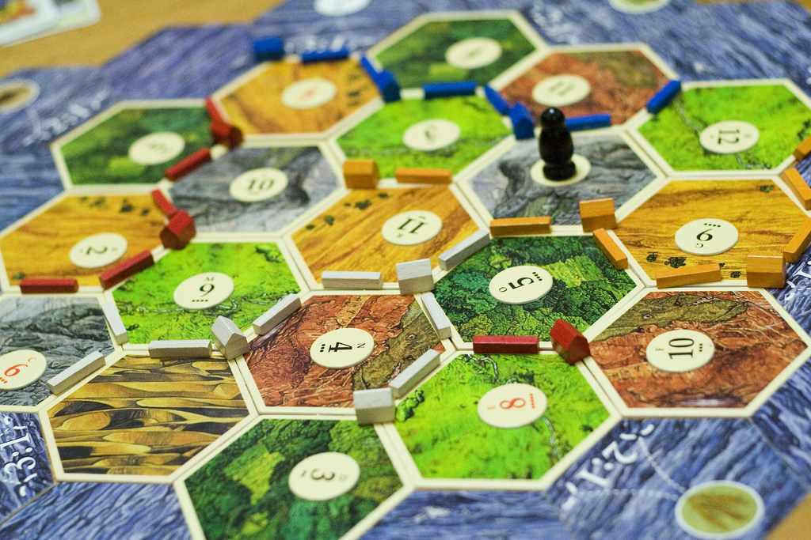

Development of Trader's International
Inspiration
Inspiration

Trader's International was built around the most enjoyable part of board games: the dynamics of the people playing the game. Have you ever had a truce in risk? Or a monopoly over a resource in Catan? Trader's International allows players to explore these possibilities in full.
Historical Connections
Trader's International is based off of real world trade from the golden age of international trade. The game reflects how trade was handled at the time and what is was like to be part of the global economy.

Updates
Trader's International is still currently in development and has yet to be in its finishing stages. Stay tuned to see what new developments are added.
Created by Camden Harrison